01 / Core
Closest to the footer
La opcion mas directa: misma voz del sitio, con un subrayado corto que la hace sentirse mas intencional en packaging.
Tres rutas visuales usando la expresion del footer y contorno vectorial derivado de Space Grotesk Bold. Todas las propuestas estan construidas para verse limpias sobre bolsas negras sin perder el punto naranja de la marca.
La opcion mas directa: misma voz del sitio, con un subrayado corto que la hace sentirse mas intencional en packaging.
Mantiene el wordmark limpio, pero cambia el punto final por un grano para dar lectura cafetera inmediata.
Una version mas util para stickers, etiquetas o frente de bolsa: monograma a la izquierda y wordmark a la derecha.
